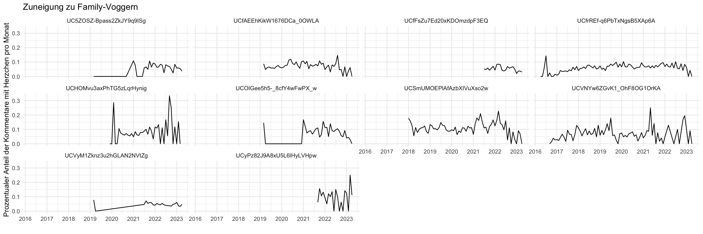

Aufgabe 06
Bitte nutzen Sie für alle Übungen dass Wissen, dass Sie sich aus dem Vorbereitungsskript für die heutige Sitzung angeeignet haben. Es ist nicht verboten, dieses zur Orientierung zu verwenden, Sie müssen nicht alle Funktionen auswendig kennen ;-)
Laden und Inspizieren des YouTube-Kommentare Datensatzes
Sie können den Datensatz ganz einfach einladen über den folgenden Befehl:
Schauen Sie sich die Daten an und überlegen Sie sich 2-3 interessante deskriptive Werte, die wir uns zu diesen Daten anschauen könnten. Setzen Sie dies nach Möglichkeit in R um. Bauen Sie außerdem mindestens eine Grafik.
Laden der zugehörigen Videos und Transkription
Überlegen Sie sich, wie sie eine kleine Test-Stichprobe (bspw. n = 5) aus allen Videos ziehen können. Laden Sie diese Videos herunter und transkribieren sie nach Möglichkeit. Überlegen Sie sich, wie Sie ggf. auch zu den Inhalten des Videos eine erste grobe Analyse durchführen könnten.
Muster-Code
Im folgenden die in der Sitzung besprochenen Code-Beispiele.
Zunächst ist es für diverse Schritte in diesem Workflow wichtig, dass Ihr Arbeitsverzeichnis richtig gesetzt ist. Daher empfehle ich, dass Sie ein R-Projekt anlegen und dieses in RStudio öffnen. Alle weiteren Schritte können Sie dann innerhalb dieses Projekts ausführen.
Zum Einlesen der Kommentare ist zunächst das arrow-Paket notwendig.
Wir können uns dann z.B. erstmal den Datensatz an sich ansehen…
# A tibble: 280,427 × 14
index comment_id published_at comment author_channel_id video_id channel_id
<int> <chr> <chr> <chr> <chr> <chr> <chr>
1 145155 UgyJP-6d-f… 2019-03-11T… "I lov… UCjDkmRxO5uROl0f… LfGOtE2… UCOIGee5h…
2 145143 UgzhMxly_w… 2019-03-11T… "Happy… UCHoSMv9ifkTtZz1… LfGOtE2… UCOIGee5h…
3 144845 UgwK80w_07… 2019-03-11T… "I lov… UCmhVWRUcmpsk4qZ… LfGOtE2… UCOIGee5h…
4 144734 UgwTrNQ-8C… 2019-03-11T… "Love … UCAJOUj7M9PSPB0l… LfGOtE2… UCOIGee5h…
5 144456 Ugwi7wGKDL… 2019-03-11T… "LITER… UCggmCt5WdqV3ZRa… LfGOtE2… UCOIGee5h…
6 144416 UgzqjG7MYk… 2019-03-11T… "Awwwe… UC1ckC8itaxzwVkh… LfGOtE2… UCOIGee5h…
7 144076 Ugy17coYF2… 2019-03-11T… "Happy… UCTVpywQBD9HXXZM… LfGOtE2… UCOIGee5h…
8 144024 Ugz5EHA4LL… 2019-03-11T… "I can… UCdUT9NO7KvR3X4J… LfGOtE2… UCOIGee5h…
9 143986 UgyLGznLHC… 2019-03-11T… "Happy… UCGEQx1oICXRd28u… LfGOtE2… UCOIGee5h…
10 143779 UgxKv4x2gT… 2019-03-11T… "I mis… UCQJRL3fSEpsIs9A… LfGOtE2… UCOIGee5h…
# ℹ 280,417 more rows
# ℹ 7 more variables: view_count <chr>, like_count <chr>,
# dislike_count <arrw_bnr>, favorite_count <chr>, video_published_at <dttm>,
# video_date <date>, video_comment_count <chr>…oder uns ausgeben lassen, welche Variablen (d.h. Spalten) im Datensatz enthalten sind.
[1] "index" "comment_id" "published_at"
[4] "comment" "author_channel_id" "video_id"
[7] "channel_id" "view_count" "like_count"
[10] "dislike_count" "favorite_count" "video_published_at"
[13] "video_date" "video_comment_count"Wir können uns auch eine kleine Zufallsstichprobe an Kommentaren ausgeben lassen.
[1] "Just had an argument with my dude about cleaning our room a little. Housekeepers get rooms ready for the next not clean up behind filthy ninjas. That’s for a MAID 😅"
[2] "Ugh he's always flexing Dilo said how u gone hold the door open and CJ says I'm trying to make sure nobody following US. They following ME NOT YALL LOL 🤣🤣🤣 BOY WHO ARE YOU?"
[3] "Txunamy I hope you have fun at prom your dad is so overworked active next time tell him not to go with you next time you should tell your mom to go with you"
[4] "The hospital needs to be giving you iv antibiotics!\nI was admitted to the hospital and got iv antibiotics when I got stabbed."
[5] "How it feel getting played? Be more humble my guy"
[6] "I love seeing you traveling and enjoying family and friends many blessings 🙏🏽🙌🏽💕\n\nSincerely,\n\nMisty.O💕"
[7] "Wow!! I'm honestly so shocked they did all of this work in like 1 hour!"
[8] "All you can do is do what you can. When those kids grow up, they will know the truth. But no parent should you their child as a pawn."
[9] "Oh I laughed and had so much fun with you all tonight! Thank you and I enjoyed another fun time with the Crosby’s! Have great weekend"
[10] "Her room is beautiful , she's adorable god bless her ❤❤" Nun zählen wir aus, wie viele Kommentare pro Kanal vorhanden sind…
# A tibble: 14 × 2
# Groups: channel_id [14]
channel_id n
<chr> <int>
1 UCfrREf-q6PbTxNgsB5XAp6A 67266
2 UCVyM1Zknz3u2hGLAN2NVtZg 66980
3 UCSmUMOEPlAfAzbXIVuXso2w 54226
4 UCVNYw6ZGvK1_OhF8OG1OrKA 22385
5 UCOIGee5h5-_8cfY4wFwPX_w 19927
6 UC5ZOSZ-Bpass2ZkJY9q9ISg 17359
7 UCfAEEhKikW1676DCa_0OWLA 17249
8 UCfFsZu7Ed20xKDOmzdpF3EQ 7686
9 UCHOMvu3axPhTG5zLqrHynig 4399
10 UCyPz82J9A8xU5L6lHyLVHpw 1878
11 <NA> 547
12 UChbKYCOnUtou3RPtFXeT73w 340
13 UC2VERcmMqi3vdtoQQ0ZP2sA 152
14 UC4-CH0epzZpD_ARhxCx6LaQ 33…und entfernen Kanäle mit sehr wenigen Kommentaren.
Wir können außerdem den Code aus dem Vorbereitungsskript anpassen und uns bspw. ansehen, in wie viel Prozent der Kommentare je Kanal Herzchen-Emojis verwendet wurden und dies über den Zeitverlauf abbilden.
comments_cleaned |>
mutate(
hearts = str_detect(comment, "❤️"),
week = floor_date(as.Date(published_at), "month")
) |>
group_by(week, channel_id) |>
summarise(share_of_hearts = sum(hearts) / n(), n = n()) |>
ggplot(aes(x = week, y = share_of_hearts)) +
geom_line() +
scale_x_date(
date_breaks = "1 year",
date_labels = "%Y"
) +
facet_wrap(~ channel_id) +
labs(
x = "", y = "Prozentualer Anteil der Kommentare mit Herzchen pro Monat",
title = "Zuneigung zu Family-Voggern"
)
Wenn wir nicht nur die Inhalte der Kommentare, sondern auch die Inhalte der zugehörigen Videos analysieren wollen, können wir diese bspw. herunterladen und transkribieren. Zunächst benötigen wir eine .txt Datei mit den URLs aller Videos, die wir herunterladen wollen. Diese können wir aus dem Kommentardatensatz auf Basis der Spalte video_id erstellen. Beispielhaft erstellen wir hier ein zufälliges Sample von 5 Videos, die wir herunterladen wollen. In einem Forschungsprojekt würden wir an dieser Stelle anstelle einer Zufallsauswahl vermutlich eher diejenigen video_ids extrahieren, die für uns inhaltlich relevant sind.
comments |>
select(channel_id, video_id) |>
distinct() |> # hiermit entfernen wir Duplikate, da video_id und channel_id im Datensatz mehrfach vorkommen (pro Kommentar)
slice_sample(n = 5) |>
mutate(url = str_c("https://www.youtube.com/watch?v=", video_id)) |> # hier erstellen wir die URL aus der video_id
pull(url) |> # in den letzten drei Schritten ziehen wir die URLs heraus...
str_flatten(collapse = "\n") |> #...fügen sie zusammen
write_file("test_urls.txt") # und speichern sie in der Datei test_urls.txtAuf Basis der erstellten Datei test_urls.txt können wir im nächsten Schritt die Videos mit dem Programm yt-dlp herunterladen und in einem neuen Unterordner namens videos abspeichern. Dazu müssen Sie zunächst sicherstellen, dass Python korrekt auf ihrem Computer installiert ist. Öffnen Sie hierzu in RStudio den Tab “Terminal” (zu finden direkt neben der “Console”, in der Sie normalerweise R-Code ausführen). Diese “Kommandozeile” Ihres Computers funktioniert im Grunde sehr ähnlich wie auch die R-Kommandozeile, die Sie bereits kennen. Um zu testen, ob Python funktioniert, geben Sie python3 ein und bestätigen Sie mit Enter. Es sollte sich nun eine Python-Umgebung mit einigen Informationen über die installierte Version öffnen. In dieser wollen wir nun jedoch gar nicht arbeiten, und schließen sie daher über den Befehl quit() direkt wieder. Stattdessen richten wir in der Kommandozeile des Computers in ihrem Projektordner eine neues Python-Environment ein. Sofern Sie in RStudio wie oben empfohlen ein Projekt erstellt und geöffnet haben, sollte sich die Kommandozeile automatisch im richtigen Ordner befinden. Sie können dies überprüfen, indem Sie in die Kommandozeile den Befehl ls eingeben und mit Enter bestätigen. Es sollten nun die Dateien und Ordner, die sich in Ihrem aktuellen Projektordner befinden, aufgelistet werden. Wenn dies der Fall ist, können wir im folgenden nun das Environment einrichten. Dafür führen wir die folgenden beiden Befehle nacheinander in der Kommandozeile aus.
python3 -m venv env
# und dann
source env/bin/activate
# dieser zweite Befehl muss jedes Mal neu ausgeführt werden, wenn Sie
# die Kommandozeile neu starten (so wie wir in R jedes Mal die Pakete neu laden müssen)Sofern das geklappt hat, sollen Sie in Ihrem Projektordner nun einen Unterordner mit dem Namen env sehen, in den wir gleich die benötigten Pakete installieren werden. Dies tun wir mit dem Befehl pip install, welcher ähnlich zu install.packages() in R ist. Wir installieren direkt die beiden Programme yt-dlp (für den Videodownload) und whisper-ctranslate2 für die Transkription. Auch diese Befehle führen wir wieder in der Konsole des Computers (nicht in der R-Konsole) aus.
Wenn die Installation erfolgreich war, können wir nun mit dem Download der Videos beginnen. Dazu nutzen wir einfach den folgenden Befehl. Wenn alle Schritte oben korrekt befolgt wurden, sollte dieser Befehl alle Videos, die in der Datei test_urls.txt gespeichert sind, herunterladen.
yt-dlp -w --write-info-json --write-thumbnail --no-write-playlist-metafiles -c -o "%(id)s.%(ext)s" -P videos -a test_urls.txtWenn Sie den Befehl modifizieren möchten, können Sie die Bedeutung der einzelnen Parameter in der Dokumentation des Pakets nachlesen.
Neben den Videos lädt das Programm auch einige Metadaten herunter, diese können wir anschließend wieder in R einlesen.
# A tibble: 5 × 6
title duration view_count comment_count like_count channel_follower_count
<chr> <dbl> <dbl> <dbl> <dbl> <dbl>
1 'Better T… 1092 114780 1000 6731 2180000
2 YOU WON'T… 912 2477732 8000 122526 2250000
3 BUYING Ev… 1276 7261283 3500 220656 10600000
4 NEW YEAR'… 650 2107860 1500 17421 7900000
5 Saying Go… 894 142649 234 3723 2180000Abschließend wollen wir nun die Videos transkribieren, damit wir ihren Inhalt später analysieren können. Dies funktioniert erneut über einen Befehl in der Kommandozeile Ihres Computers (nachdem Sie oben schon whisper-ctranslate2 installiert haben). Beispielhaft transkribieren wir hier nur eines der heruntergeladenen Videos, indem wir es im Befehl über den entsprechenden Pfad (Unterordner videos) und Dateinamen auswählen. Alternativ können wir auch alle Videos auf einmal transkribieren, indem wir im Befehl einen Platzhalter (videos/*.mp4) verwenden.
Auch die erstellten Transkripe können wir (ähnlich wie oben die Metadaten) alle auf einmal einlesen, indem Sie den entsprechenden Befehl von oben modifizieren. Da wir testweise nur ein Video transkribiert haben, laden wir dieses einfach ein mit
# A tibble: 161 × 3
start end text
<dbl> <dbl> <chr>
1 0 2000 Today is New Year's gift opening day.
2 2000 4160 This is mine, and this is Rachel's.
3 4160 4660 Boo!
4 8660 10060 Don't worry, these gifts were cool.
5 10060 11680 Comment down below if you have an idea.
6 11680 12480 Who goes first?
7 12480 12980 Me!
8 12980 13480 Me!
9 13480 14480 Okay, rock, paper, scissors.
10 14480 15480 Rock, paper, scissors!
# ℹ 151 more rows